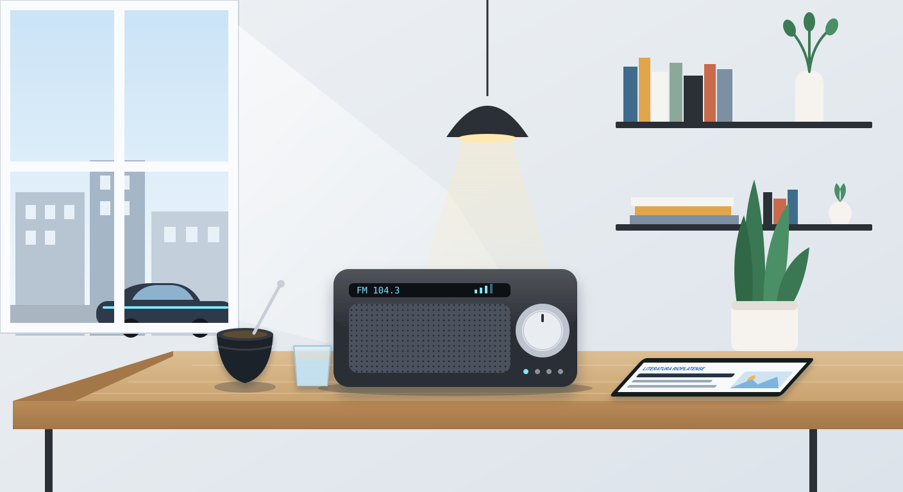

Literatura de las dos orillas
Línea de tiempo
UruguayArgentinaun punto por obra emblemática
Autores
País
Época
Género
Cruces del Plata
Escritores que cruzaron el río, géneros nacidos de un lado y madurados en el otro, exilios y lecturas compartidas.
Dos mesas, dos épocas
Arrastrá la barra para pasar de la mesa clásica, con radio a transistores y diario en papel, a la mesa de hoy.

 ClásicaModerna
ClásicaModerna